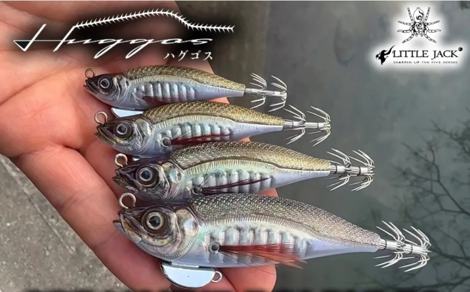
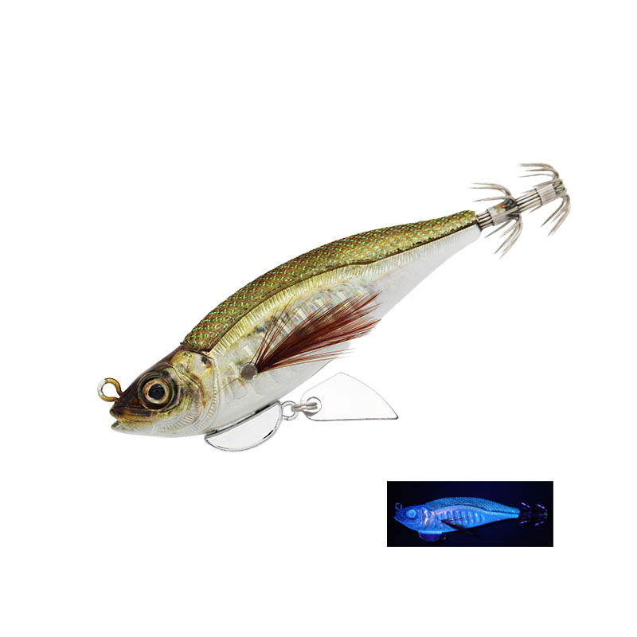
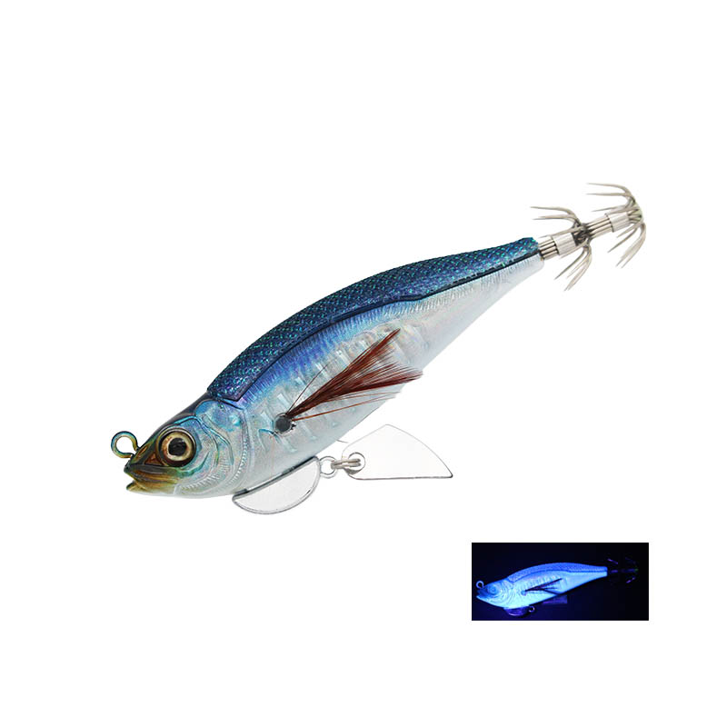
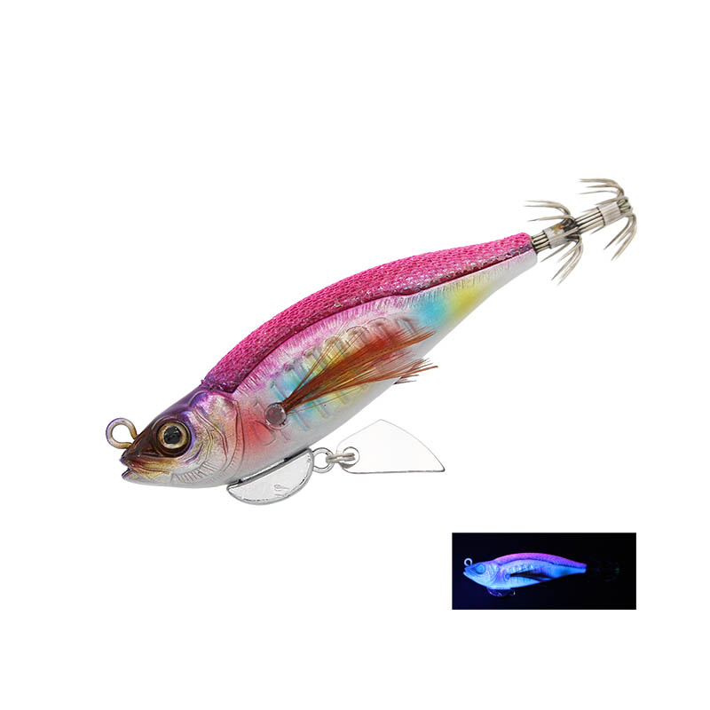
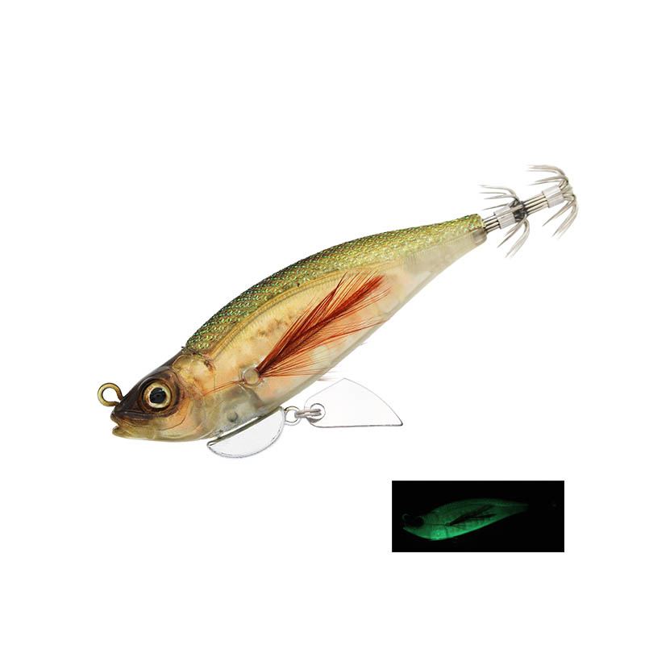

ハグゴス
（エギ（魚型））
ハグゴス（HUGGOS）はリトルジャックのエギです。
イカが日常的に食べているアジをリアルに再現した魚型のエギで、ただ巻きのS字アクションやロッドワークでのS字スライドで“魚の逃げ惑う動き”を演出します。従来のエギのアクションに反応しきらなかったイカに、新しい動きでスイッチを入れられるのが最大の魅力です。

画像出典:リトルジャック公式HP
スペック
- メーカー
- リトルジャック
- タイプ
- エギ（アジ型・ハーフ布巻き）
- サイズ・自重
- 55mm 6g／65mm 9g／75mm 14g／90mm 22g
- 沈降速度
- 4.5秒/m
- フォール姿勢
- 40度
- フック
- BKK製
- ターゲット
- アオリイカ・ヒイカ・ヤリイカ・ケンサキイカ・コウイカ
- 発売
- 2026年3月
▼今すぐチェック
ハグゴスの特徴
アジの姿とS字アクションで、“逃げ惑う魚”を演出する魚型エギ
-
アジをリアルに再現したボディ
体高・シルエット・面構成まで細かく作り込み、イカが日常的に捕食しているアジを忠実に再現。見た目だけでなく、実釣性能として成立するリアルさを追求している。
-
ただ巻きのS字と、ロッドワークのS字スライド
一定速のリトリーブでは安定したS字アクション、ロッドワークを加えると鋭いS字スライドに変わる。スロージャークやフォールを混ぜれば、弱ったベイトや逃げ惑う魚の動きまで再現できる。
-
キールブレードとハーフ布巻き
同梱のキールブレードを付けると、フラッシングに加えてキレのあるダートも出せる。背中は布巻きで、イカが抱いた時の違和感を減らし、長く抱かせてしっかり掛ける。
ハグゴスの使い方
基本はキャストして沈め、一定速のただ巻きでS字アクションを出す。反応がない時は、ロッドワークを加えてS字スライドで逃げ惑う魚を演出する。
キールブレードを付けた場合は、ロッドティップを小さく鋭く動かすだけで左右にダートする。エギングのような大きなシャクリは不要で、ルアーフィッシングに近い感覚で使えます。
ハグゴスの得意な状況
イカがアジなどの小魚を追っている時や、普通のエギのアクションに反応が落ちた時が最大の出番。
55mmから90mmまでそろうので、ヒイカ・ヤリイカのライトエギングから、アオリイカ・コウイカ狙い、オフショアのイカメタルのドロッパーまで幅広く使えます。
ワンポイント
フォール姿勢は40度、沈降速度は4.5秒/mと、ゆっくり見せられる設計です。シャローエリアやサーフでも根掛かりを気にせず使えます。
ウエイトのマルチアイにフックを付ければ、シーバスやフラットフィッシュなど魚狙いのルアーとしても使えます。
オススメカラー
ハグゴスは全色にUVまたは夜光を塗装。オススメのカラーを厳選して紹介します。

#01 極AJI / UVリアルなアジを再現した基本カラー。ベイトがアジの時はまずこれ。

#02 BLUE AJI / UV青背のアジカラー。日中の澄み潮でナチュラルに見せたい時に。

#04 PINK AJI / UVエギングの定番ピンクを取り入れたアピールカラー。

#07 REFLECTOR AJI / GLOWリフレクターとグローで光量の少ない時間帯にアピール。
画像出典:リトルジャック公式HP
ハグゴスに似ているルアー
-
クリンチ カエル跳びアッパー
シマノ
詳細はこちら＞
左右＋上への立体ダートで誘う新作エギ。動きで反応させたいという狙いが共通する。
-
 キャストランナー
クレイジーオーシャン
詳細はこちら＞
キャストランナー
クレイジーオーシャン
詳細はこちら＞
シンカーハンガーで沈下速度を変えられるエギ。普通のエギに戻したい時の持ち替え候補。
-
 ゲキダキ カミナリ
ジャッカル
詳細はこちら＞
ゲキダキ カミナリ
ジャッカル
詳細はこちら＞
飛距離・ダート・フォールのバランスが良い新作エギ。ダートで攻めたい時に。